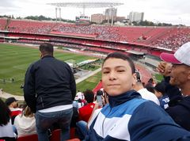

Não sei oq falar sobre mim, mas eu sou Lucas, torcedor fanatico do São Paulo Futebol clube.
Eu nasci em São Paulo Capital e, em 2020, me mudei para Campo Belo-MG, uma cidade do sul de Minas, e aqui eu fiquei conhecido como Paulista. Atualmente Tenho 16 anos e estou no segundo ano do ensino médio.

Fica com uma foto do pai no Morumbi, Melhor dia da minha vida...20/10/2019, 1x0 contra o Avai, gol do Arboleda de cabeça.
